"Bienvenidos a nuestra pagina web"
Bienvenidos al Seminario Rhema Tayacaja Formando líderes transformadores con una sólida fundamentación bíblica y teológica para la obra del ministerio en Tayacaja y más allá.
EmpezarPÚBLICO OBJETIVO
¿A quién está dirigido el Seminario Rhema Tayacaja?
El Seminario Rhema Tayacaja está dirigido a hombres y mujeres con un llamado al servicio cristiano, que desean profundizar en el conocimiento de la Palabra de Dios y prepararse integralmente para la obra del ministerio.
📖 Nuevos Creyentes
Personas que han iniciado su caminar en la fe cristiana y desean fortalecer sus fundamentos bíblicos y doctrinales.
⛪ Líderes y Servidores
Líderes de iglesias locales, maestros bíblicos, diáconos y servidores que buscan una formación teológica más sólida.
🎙️ Pastores y Obreros
Pastores, evangelistas y obreros del ministerio que desean capacitarse y perfeccionar su llamado con herramientas bíblicas y pastorales.
🎓 Estudiantes con Vocación Ministerial
Personas con vocación al estudio teológico que desean prepararse académica y espiritualmente para servir a Dios y a la Iglesia.
INSCRIPCIÓN
Requisitos para Inscripción al Seminario
Para garantizar una formación integral y responsable, el Seminario Rhema Tayacaja establece los siguientes requisitos para los Estudiantes.
Entusiasmo y ganas de aprender.
Presentar carta de recomendación pastoral o de la autoridad eclesiástica.
Certificado de Bautismo en agua.
Copia de DNI.
3 fotos tamaño carnet.
Disciplina
FORMACIÓN TEOLÓGICA
Malla Curricular del Instituto Bíblico IEPJ

Ciclo I – Fundamentos de la Teología
Duración: 10 semanas
Horas: 600 | Créditos: 40
- Introducción a la teología
- Método de estudio bíblico
- Teología sistemática I (Escrituras, Trinidad)
- Hermenéutica
- Lengua española (gramática)
- Pentateuco
- Evangelios
- Homilética
- Teología sistemática II (Hombre, pecado)
Ciclo II – Desarrollo Ministerial
Duración: 10 semanas
Horas: 600 | Créditos: 40
- Cartas Paulinas
- Historia de la Iglesia I
- Dones y ministerios
- El libro de los Hechos
- Teología sistemática III (Cristo, salvación)
- Libros históricos
- Teología pastoral
- Apologética bíblica
- Metodología de la investigación (Ensayo)
- Teología sistemática IV (Espíritu Santo, Iglesia)
Ciclo III – Aplicación y Liderazgo
Duración: 10 semanas
Horas: 600 | Créditos: 40
- Libros poéticos
- Epístolas generales
- Administración eclesiástica
- La epístola a los Hebreos
- Libros proféticos
- Metodología de la investigación (Monografía)
- Libros de Daniel y Apocalipsis
- Ética cristiana
- Historia de la IEPJ
- Epístolas pastorales
- Teología sistemática V (Bautismo en el Espíritu Santo, sanidad)
Visión y Misión del Seminario Rhema Tayacaja
El Seminario Evangelico Rhema Tayacaja de la IEPJ está dedicado a extender el conocimiento de la Palabra de Dios y formar líderes transformadores con una sólida fundamentación bíblica y teológica para la obra del ministerio.
Nuestra meta es el crecimiento en el conocimiento de Cristo y el desarrollo ministerial.
NUESTRO ENFOQUE
Pilares Fundamentales de la Formación Teológica
Fundamentos Teológicos y Bíblicos
Provee una base sólida en el estudio de las Escrituras, Hermenéutica y las doctrinas esenciales de la fe (Trinidad, el hombre y el pecado).
Capacitación para el Ministerio Práctico
Desarrolla habilidades en Teología Pastoral, Homilética, Apologética Bíblica y el estudio de la Iglesia y el Espíritu Santo (Teología Sistemática IV).
Aplicación y Liderazgo Eclesiástico
Enfocado en la administración de la iglesia, Ética Cristiana, Metodología de la Investigación (Monografía) y Teología de la Sanidad y el Espíritu Santo.
NUESTRA HISTORIA
Historia del Seminario Rhema Tayacaja
El Seminario Rhema Tayacaja nace como una respuesta al llamado de Dios para formar líderes comprometidos con la sana doctrina y el servicio ministerial. Desde sus inicios, ha tenido como propósito preparar obreros fieles, con una sólida base bíblica y teológica.
A lo largo de los años, el seminario ha sido un espacio de crecimiento espiritual, académico y ministerial, impactando vidas y fortaleciendo iglesias en Tayacaja y otras regiones. Su enseñanza se mantiene firme en los principios bíblicos, adaptándose a los tiempos sin perder la esencia del Evangelio.
Hoy, el Seminario Rhema Tayacaja continúa su misión con el mismo compromiso: formar líderes transformadores para la obra del Señor, preparados para enseñar, pastorear y servir con integridad.
 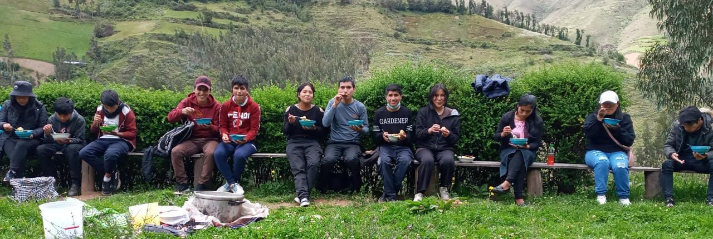
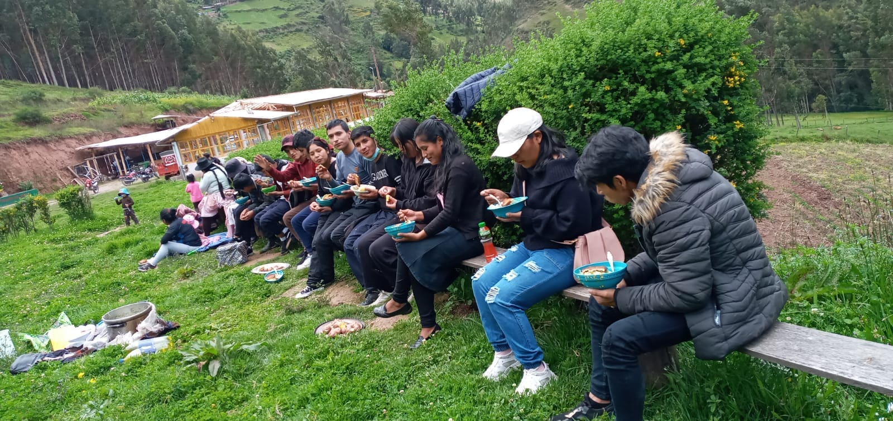
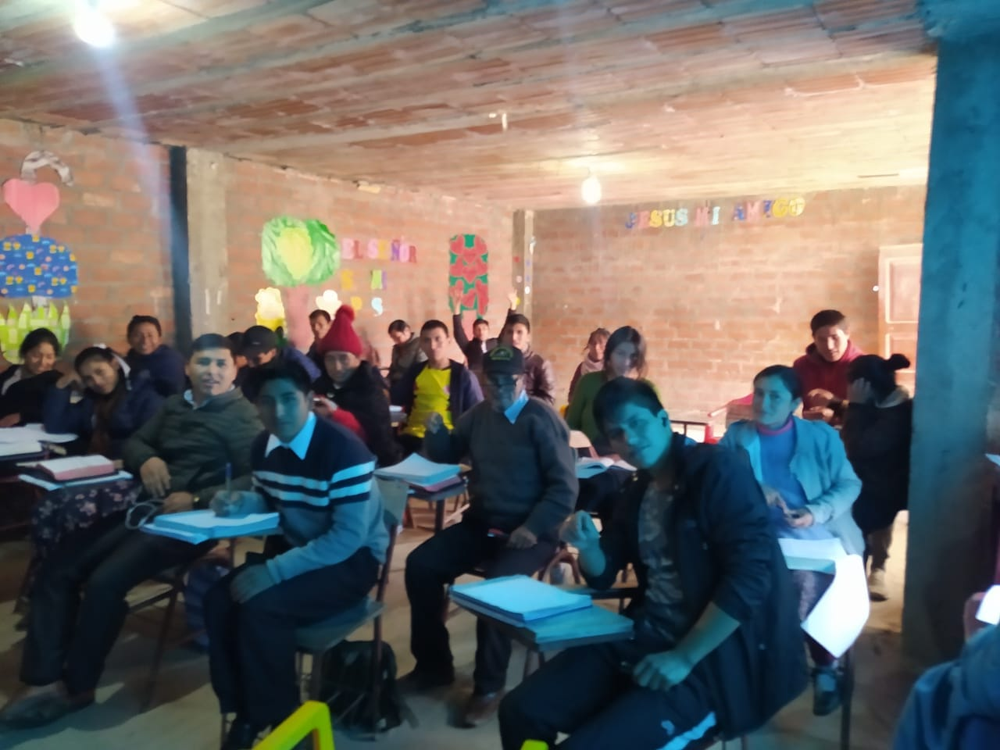
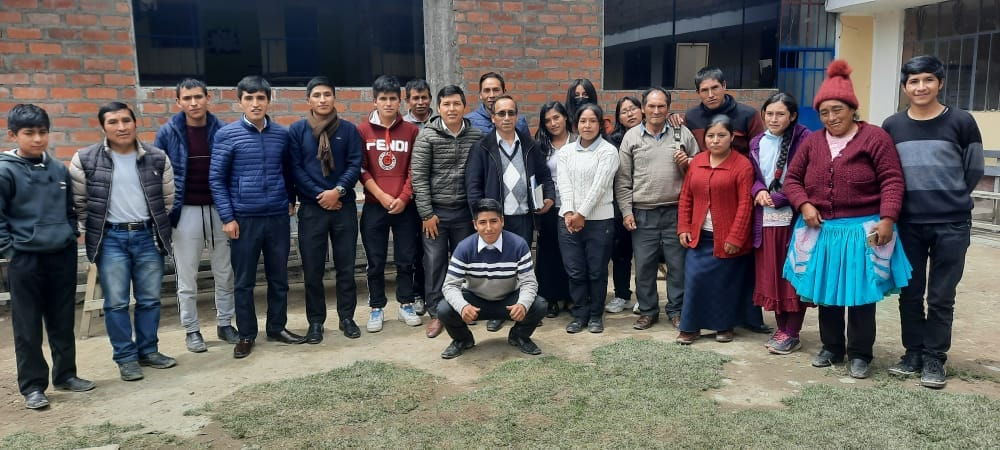
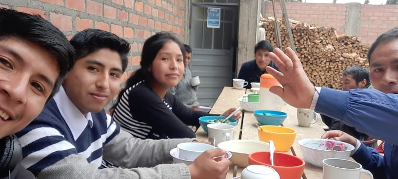
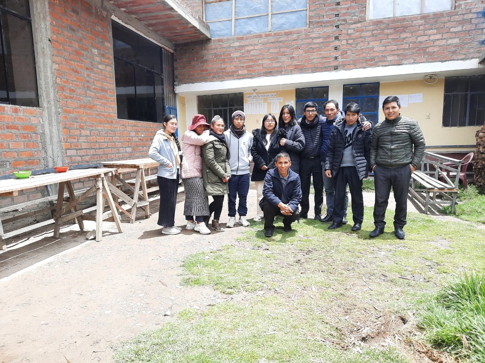
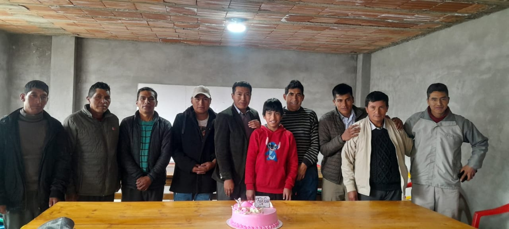
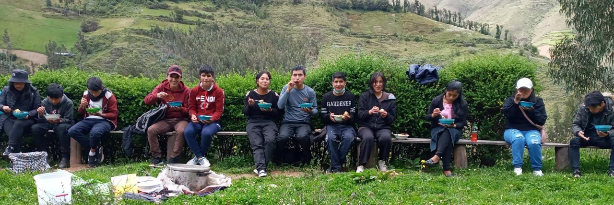
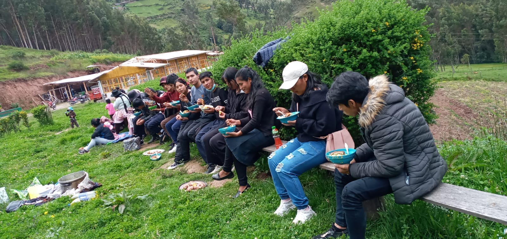
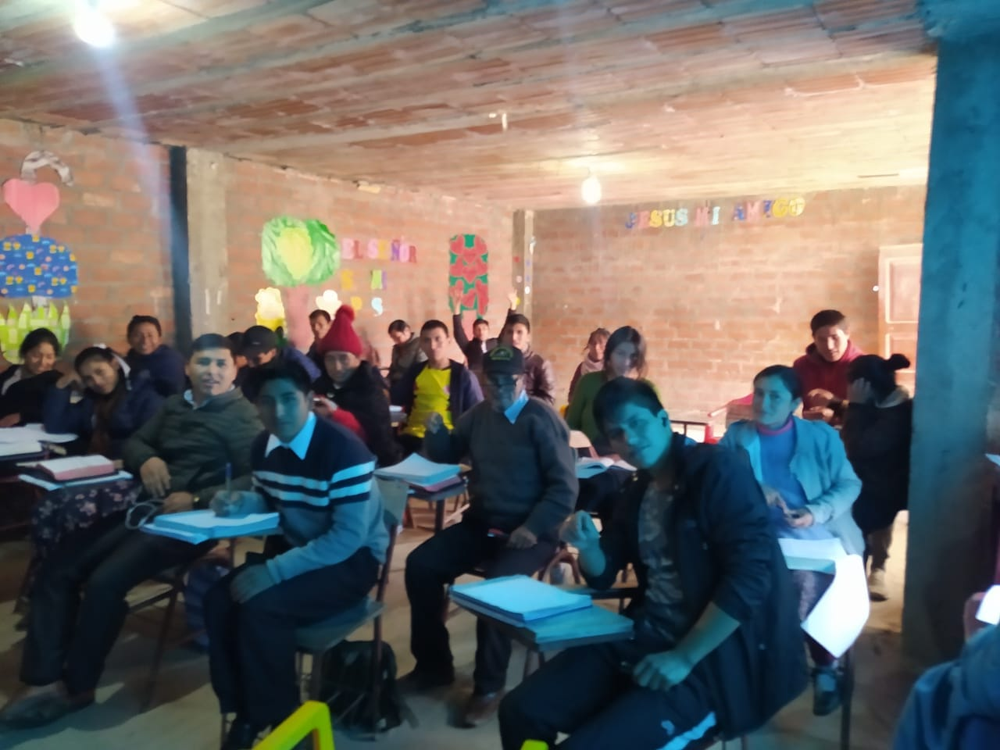
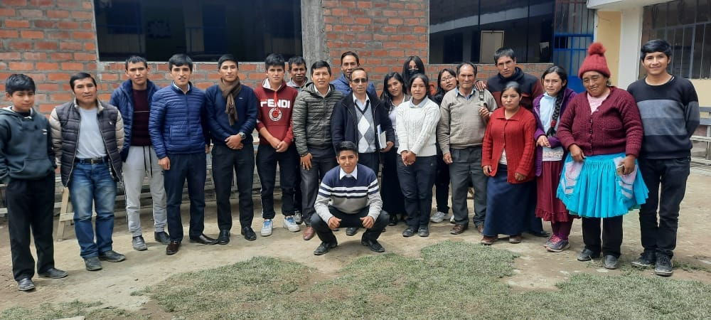
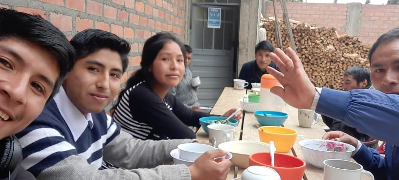
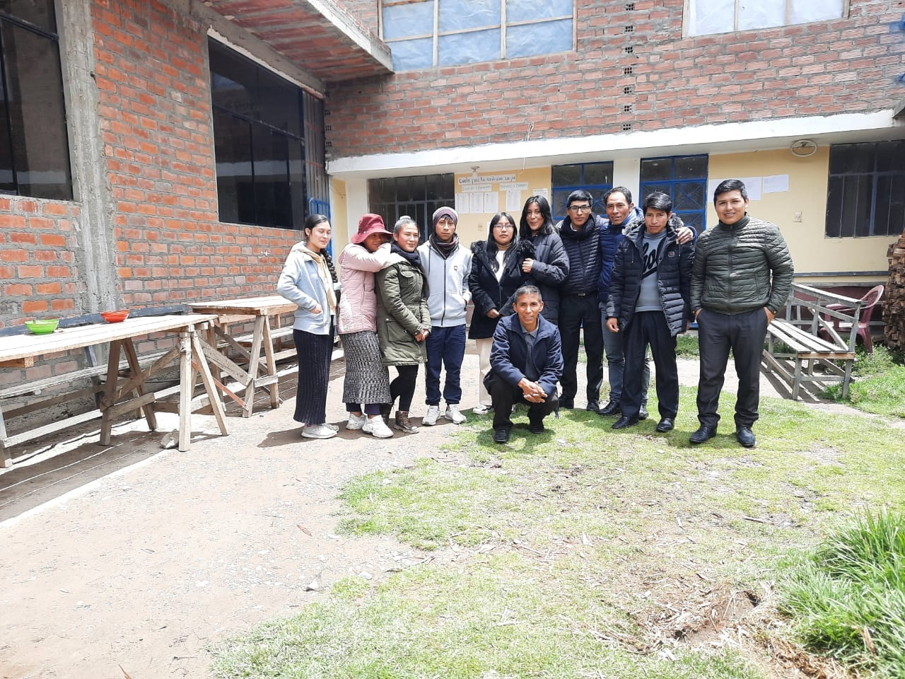
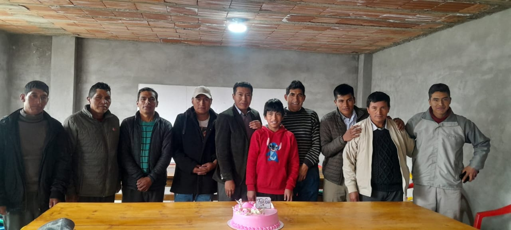